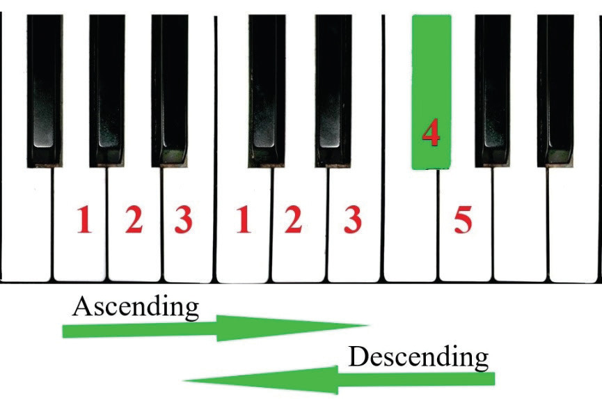
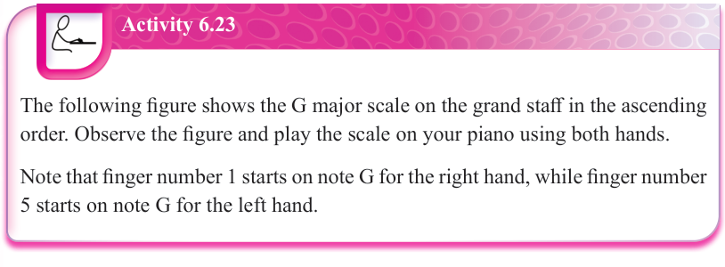

Figure (a)


Figure (b)


Activity 6.23
The following figure shows the G major scale on the grand staff in the ascending order. Observe the figure and play the scale on your piano using both hands.
Note that finger number 1 starts on note G for the right hand, while finger number 5 starts on note G for the left hand.